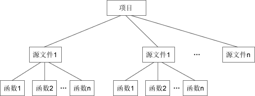
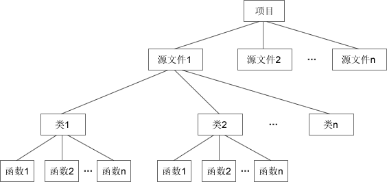

C++类和对象到底是什么意思？
C++ 是一门面向对象的编程语言，理解 C++，首先要理解类（Class）和对象（Object）这两个概念。
C++ 中的类（Class）可以看做C语言中结构体（Struct）的升级版。结构体是一种构造类型，可以包含若干成员变量，每个成员变量的类型可以不同；可以通过结构体来定义结构体变量，每个变量拥有相同的性质。例如：
小明的年龄是 15，成绩是 92.500000
C++ 中的类也是一种构造类型，但是进行了一些扩展，类的成员不但可以是变量，还可以是函数；通过类定义出来的变量也有特定的称呼，叫做“对象”。例如：
C语言中的 struct 只能包含变量，而 C++ 中的 class 除了可以包含变量，还可以包含函数。display() 是用来处理成员变量的函数，在C语言中，我们将它放在了 struct Student 外面，它和成员变量是分离的；而在 C++ 中，我们将它放在了 class Student 内部，使它和成员变量聚集在一起，看起来更像一个整体。
结构体和类都可以看做一种由用户自己定义的复杂数据类型，在C语言中可以通过结构体名来定义变量，在 C++ 中可以通过类名来定义变量。不同的是，通过结构体定义出来的变量还是叫变量，而通过类定义出来的变量有了新的名称，叫做对象（Object）。
在第二段代码中，我们先通过 class 关键字定义了一个类 Student，然后又通过 Student 类创建了一个对象 stu1。变量和函数都是类的成员，创建对象后就可以通过点号
可以将类比喻成图纸，对象比喻成零件，图纸说明了零件的参数（成员变量）及其承担的任务（成员函数）；一张图纸可以生产出多个具有相同性质的零件，不同图纸可以生产不同类型的零件。
类只是一张图纸，起到说明的作用，不占用内存空间；对象才是具体的零件，要有地方来存放，才会占用内存空间。
在 C++ 中，通过类名就可以创建对象，即将图纸生产成零件，这个过程叫做类的实例化，因此也称对象是类的一个实例（Instance）。
有些资料也将类的成员变量称为属性（Property），将类的成员函数称为方法（Method）。
因为 C++、Java、C#、PHP 等语言都支持类和对象，所以使用这些语言编写程序也被称为面向对象编程，这些语言也被称为面向对象的编程语言。C语言因为不支持类和对象的概念，被称为面向过程的编程语言。
在C语言中，我们会把重复使用或具有某项功能的代码封装成一个函数，将拥有相关功能的多个函数放在一个源文件，再提供一个对应的头文件，这就是一个模块。使用模块时，引入对应的头文件就可以。
而在 C++ 中，多了一层封装，就是类（Class）。类由一组相关联的函数、变量组成，你可以将一个类或多个类放在一个源文件，使用时引入对应的类就可以。下面是C和C++项目组织方式的对比：
不要小看类（Class）这一层封装，它有很多特性，极大地方便了中大型程序的开发，它让 C++ 成为面向对象的语言。
面向对象编程在代码执行效率上绝对没有任何优势，它的主要目的是方便程序员组织和管理代码，快速梳理编程思路，带来编程思想上的革新。
面向对象编程是针对开发中大规模的程序而提出来的，目的是提高软件开发的效率。不要把面向对象和面向过程对立起来，面向对象和面向过程不是矛盾的，而是各有用途、互为补充的。如果你希望开发一个贪吃蛇游戏，类和对象或许是多余的，几个函数就可以搞定；但如果开发一款大型游戏，那你绝对离不开面向对象。
C++ 中的类（Class）可以看做C语言中结构体（Struct）的升级版。结构体是一种构造类型，可以包含若干成员变量，每个成员变量的类型可以不同；可以通过结构体来定义结构体变量，每个变量拥有相同的性质。例如：
#include <stdio.h>
//定义结构体 Student
struct Student{
//结构体包含的成员变量
char *name;
int age;
float score;
};
//显示结构体的成员变量
void display(struct Student stu){
printf("%s的年龄是 %d，成绩是 %f\n", stu.name, stu.age, stu.score);
}
int main(){
struct Student stu1;
//为结构体的成员变量赋值
stu1.name = "小明";
stu1.age = 15;
stu1.score = 92.5;
//调用函数
display(stu1);
return 0;
}
运行结果：小明的年龄是 15，成绩是 92.500000
C++ 中的类也是一种构造类型，但是进行了一些扩展，类的成员不但可以是变量，还可以是函数；通过类定义出来的变量也有特定的称呼，叫做“对象”。例如：
#include <stdio.h>
//通过class关键字类定义类
class Student{
public:
//类包含的变量
char *name;
int age;
float score;
//类包含的函数
void say(){
printf("%s的年龄是 %d，成绩是 %f\n", name, age, score);
}
};
int main(){
//通过类来定义变量，即创建对象
class Student stu1; //也可以省略关键字class
//为类的成员变量赋值
stu1.name = "小明";
stu1.age = 15;
stu1.score = 92.5f;
//调用类的成员函数
stu1.say();
return 0;
}
运行结果与上例相同。
对于熟悉 C++ 的读者，这段代码并不规范，请忽略这一细节，本节的重点是引入类和对象的概念。这套 C++ 教程是在C的基础上编写的，我并不希望一开始就提出过多的 C++ 概念，让读者吃不消，我希望读者从C逐渐过渡到 C++，从第二章开始编写规范的 C++ 代码。也就是说，包括本节在内，第一章有很多不规范的 C++ 代码，再次请熟悉 C++ 的读者忽略。class 和 public 都是 C++ 中的关键字，初学者请先忽略 public（后续会深入讲解），把注意力集中在 class 上。
C语言中的 struct 只能包含变量，而 C++ 中的 class 除了可以包含变量，还可以包含函数。display() 是用来处理成员变量的函数，在C语言中，我们将它放在了 struct Student 外面，它和成员变量是分离的；而在 C++ 中，我们将它放在了 class Student 内部，使它和成员变量聚集在一起，看起来更像一个整体。
结构体和类都可以看做一种由用户自己定义的复杂数据类型，在C语言中可以通过结构体名来定义变量，在 C++ 中可以通过类名来定义变量。不同的是，通过结构体定义出来的变量还是叫变量，而通过类定义出来的变量有了新的名称，叫做对象（Object）。
在第二段代码中，我们先通过 class 关键字定义了一个类 Student，然后又通过 Student 类创建了一个对象 stu1。变量和函数都是类的成员，创建对象后就可以通过点号
.来使用它们。可以将类比喻成图纸，对象比喻成零件，图纸说明了零件的参数（成员变量）及其承担的任务（成员函数）；一张图纸可以生产出多个具有相同性质的零件，不同图纸可以生产不同类型的零件。
类只是一张图纸，起到说明的作用，不占用内存空间；对象才是具体的零件，要有地方来存放，才会占用内存空间。
在 C++ 中，通过类名就可以创建对象，即将图纸生产成零件，这个过程叫做类的实例化，因此也称对象是类的一个实例（Instance）。
有些资料也将类的成员变量称为属性（Property），将类的成员函数称为方法（Method）。
面向对象编程（Object Oriented Programming，OOP）
类是一个通用的概念，C++、Java、C#、PHP 等很多编程语言中都支持类，都可以通过类创建对象。可以将类看做是结构体的升级版，C语言的晚辈们看到了C语言的不足，尝试加以改善，继承了结构体的思想，并进行了升级，让程序员在开发或扩展大中型项目时更加容易。因为 C++、Java、C#、PHP 等语言都支持类和对象，所以使用这些语言编写程序也被称为面向对象编程，这些语言也被称为面向对象的编程语言。C语言因为不支持类和对象的概念，被称为面向过程的编程语言。
在C语言中，我们会把重复使用或具有某项功能的代码封装成一个函数，将拥有相关功能的多个函数放在一个源文件，再提供一个对应的头文件，这就是一个模块。使用模块时，引入对应的头文件就可以。
而在 C++ 中，多了一层封装，就是类（Class）。类由一组相关联的函数、变量组成，你可以将一个类或多个类放在一个源文件，使用时引入对应的类就可以。下面是C和C++项目组织方式的对比：

图1：C语言中项目的组织方式
图1：C语言中项目的组织方式

图2：C++中项目的组织方式
图2：C++中项目的组织方式
不要小看类（Class）这一层封装，它有很多特性，极大地方便了中大型程序的开发，它让 C++ 成为面向对象的语言。
面向对象编程在代码执行效率上绝对没有任何优势，它的主要目的是方便程序员组织和管理代码，快速梳理编程思路，带来编程思想上的革新。
面向对象编程是针对开发中大规模的程序而提出来的，目的是提高软件开发的效率。不要把面向对象和面向过程对立起来，面向对象和面向过程不是矛盾的，而是各有用途、互为补充的。如果你希望开发一个贪吃蛇游戏，类和对象或许是多余的，几个函数就可以搞定；但如果开发一款大型游戏，那你绝对离不开面向对象。
关注公众号「站长严长生」，在手机上阅读所有教程，随时随地都能学习。内含一款搜索神器，免费下载全网书籍和视频。

微信扫码关注公众号